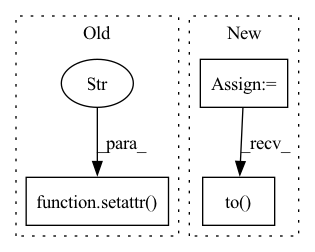

Pattern ID :19513

Before Change
setattr(module, "use_bf", bias.abs().sum() != 0)
setattr(module, "zero_cache", module.zeros)
setattr(module, "idxs_cache", module.idxs)
return module
def forward(self, x):
After Change
current += 1
else:
select_idxs.append(module.weight.shape[0])
select_idxs = torch.tensor(select_idxs)
module.register_buffer("idxs", idxs.to(module.weight.device))
module.register_buffer("select_idxs", select_idxs.to(module.weight.device))
module.register_parameter("bf", torch.nn.Parameter(bias))
setattr(module, "use_bf", bias.abs().sum() != 0)
In pattern: SUPERPATTERN
Frequency: 3
Non-data size: 3
Instances
Fragment ID: 63528377
Project Name: eidoslab/simplify
Commit Name: 20f2d560394960f91d131408660f14299acf9c1d
Time: 2021-07-08
Author: carlo.alberto.barbano@outlook.com
File Name: simplify/layers.py
M Class Name: ConvExpand
N Class Name: ConvExpand
M Method Name: from_conv(3)
N Method Name: from_conv(3)
M Parent Class: nn.Conv2d
N Parent Class: nn.Conv2d
M File Name: simplify/layers.py
N File Name: simplify/layers.py
M Start Line: 39
M End Line: 43
N Start Line: 26
N End Line: 37
'>
Before Change
self._define_params()
self.apply(self.init_weights)
setattr(corpus, "user_min_interval", dict())
for u, user_df in corpus.all_df.groupby("user_id"):
time_seqs = user_df["time"].values
interval_matrix = np.abs(time_seqs[:, None] - time_seqs[None, :])
min_interval = np.min(interval_matrix + (interval_matrix <= 0) * 0xFFFF)
After Change
def __init__(self, args, corpus):
super().__init__(args, corpus)
self.emb_size = args.emb_size
self.max_his = args.history_max
self.num_layers = args.num_layers
self.num_heads = args.num_heads
self.max_time = args.time_max
self.len_range = torch.from_numpy(np.arange(self.max_his)).to(self.device)
self.user_min_interval = dict()
for u, user_df in corpus.all_df.groupby("user_id"):
time_seqs = user_df["time"].values
'>
Fragment ID: 63528378
Project Name: thuwangcy/rechorus
Commit Name: 82e155ffe9b12a8da63c84b8dc1cc31428ed8466
Time: 2022-08-14
Author: THUwangcy@gmail.com
File Name: src/models/sequential/TiSASRec.py
M Class Name: TiSASRec
N Class Name: TiSASRec
M Method Name: __init__(3)
N Method Name: __init__(3)
M Parent Class: SequentialModel
N Parent Class: SASRec
M File Name: src/models/sequential/TiSASRec.py
N File Name: src/models/sequential/TiSASRec.py
M Start Line: 38
M End Line: 45
N Start Line: 40
N End Line: 54
'>
Before Change
module.register_parameter("bf", torch.nn.Parameter(bias))
module.register_buffer("zeros", torch.zeros(1, 1, *shape[2:], dtype=bias.dtype, device=module.weight.device))
setattr(module, "zero_cache", module.zeros)
setattr(module, "idxs_cache", module.idxs)
return module
def forward(self, x):
After Change
def from_bn(module: nn.BatchNorm2d, idxs: torch.Tensor, bias, shape):
module.__class__ = BatchNormExpand
select_idxs = []
current = 0
for i in range(bias.shape[0]):
if i in idxs:
select_idxs.append(current)
current += 1
else:
select_idxs.append(module.weight.shape[0])
select_idxs = torch.tensor(select_idxs)
module.register_buffer("idxs", idxs.to(module.weight.device))
module.register_buffer("select_idxs", select_idxs.to(module.weight.device))
module.register_parameter("bf", torch.nn.Parameter(bias))
// module.register_buffer("zeros", torch.zeros(1, 1, *shape[2:], dtype=bias.dtype, device=module.weight.device))
'>
Fragment ID: 63528373
Project Name: eidoslab/simplify
Commit Name: 20f2d560394960f91d131408660f14299acf9c1d
Time: 2021-07-08
Author: carlo.alberto.barbano@outlook.com
File Name: simplify/layers.py
M Class Name: BatchNormExpand
N Class Name: BatchNormExpand
M Method Name: from_bn(4)
N Method Name: from_bn(4)
M Parent Class: nn.BatchNorm2d
N Parent Class: nn.BatchNorm2d
M File Name: simplify/layers.py
N File Name: simplify/layers.py
M Start Line: 99
M End Line: 101
N Start Line: 87
N End Line: 98